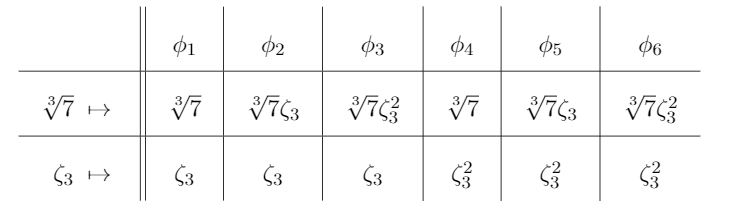

Quintic Polynomials
Abstract
Using results from an undergraduate courses on modern algebra, we investigate two quintic polynomials: \(q(x) = x^5 + 3x^3 - 7x^2 - 21\) and \(p(x) = x^5+3x^4-3\). We show that \(q(x)\) is solvable by radicals, but \(p(x)\) is not.
Introduction
In this paper, we are going to take a deeper look into polynomials. We intend to show that not all polynomials are solvable by radicals by investigating two examples of quintic polynomials and proving that one is solvable by radicals, but the other is not. For a general polynomial \(f(x) = a_n x^n + a_{n-1} x^{n-1} + \cdots + a_1 x + a_0\) to be solvable by radicals, its roots must be able to be generated solely by the operations of addition, subtraction, multiplication, and division as well as \(kth\) roots for any \(k\in \mathbb{Z^+}\) in a finite number of steps using the coefficients of the polynomial \((a_n, a_{n-1}, \cdots, a_1, a_0)\). Solvability by radicals generalizes familiar notions like the quadratic, cubic, and quartic formulas. In other words, there are general formulas for any polynomial of degrees \(2,3,4\). Take, for example, any polynomial \(p(x) = ax^2 - bx - c\) where \(a,b,c\) are the coefficients. Then, by the quadratic formula we know its roots are \(x = (-b + \sqrt{b^2 - 4ac})/2a\) and \((-b - \sqrt{b^2 - 4ac})/2a\). Observe that these roots are generated purely from adding, subtracting, multiplying, dividing, and using square roots of the coefficients of the polynomial. We know that polynomials up to degree \(4\) are always solvable by radicals, but what happens when the degree is \(5\) or greater. Carl Friedrich Gauss was the first to suggest that solving quintics by radicals might be impossible. Around 1770, Joseph Louis Lagrange laid down a lot of the groundwork with regards to quintic polynomials. Then, in 1799, Paolo Ruffini nearly provided a proof showing that there exist polynomials that are unsolvable by radicals, but his proof was incomplete. It was not until 1824, when Niels Henrik Abel first provided a completed proof, which he later elaborated on and published in 1826. Thus, the theorem is named the Abel-Ruffini theorem after both mathematicians and states that there is no solution in radicals to general polynomial equations of degree five or higher with arbitrary coefficients(Abel-Ruffini theorem).
Solvable Polynomials by Radicals
In this section, we provide the precise definition of what it means for a polynomial to be solvable by radicals over a field, and then we show that \(q(x) = x^5 + 3x^3 - 7x^2 - 21\) is solvable by radicals over \(\mathbb{Q}\). The definitions are taken from Insolvability of the Quintic.
Definition 2.1
We say \(K\) is a radical extension of a field \(F\) if there exist nonzero elements \(r_1,r_2,\ldots,r_m\in K\) and positive integers \(n_1,n_2\ldots,n_m\) such that \(K = F(r_1,r_2,\ldots,r_m)\), \(r_1^{n_1} \in F\), and for all \(2\le i\le m\), \(r_i^{n_i} \in F(r_1,\ldots,r_{i-1})\).
Definition 2.2
Let \(F\) be a field, and let \(p(x)\in F[x]\). We say that \(p(x)\) is solvable by radicals over \(F\) if all of the roots of \(p(x)\) are contained in some radical extension of \(F\).
We now show that \(q(x) = x^5 + 3x^3 - 7x^2 - 21\) is solvable by radicals over \(\mathbb{Q}\).
Theorem 2.3
The polynomial \(q(x) = x^5 + 3x^3 - 7x^2 - 21\) is solvable by radicals over \(\mathbb{Q}\).
Proof. \(q(x) = x^5 + 3x^3 - 7x^2 - 21 = x^3(x^2+3)-7(x^2+3) = (x^2+3)(x^3-7).\) By theorem 3.26, we know that \(x^3-7=0\) gives us \(x=\sqrt[3]{7}, \sqrt[3]{7}\zeta_3, \sqrt[3]{7}\zeta_3^2\). And from \(x^2+3=0\), we have \(x=-i\sqrt{3}, i\sqrt{3}\). The set of all the roots is \(\{\sqrt[3]{7}, \sqrt[3]{7}\zeta_3, \sqrt[3]{7}\zeta_3^2, -i\sqrt{3}, i\sqrt{3}\}\). Therefore, \(\mathbb{Q}(\sqrt[3]{7},\zeta_3,i\sqrt{3})\) is a radical extension of \(\mathbb{Q}\) since \((\sqrt[3]{7})^3 = 7\) is in \(\mathbb{Q}\), \((\zeta_3)^3 = 1\) is in \(\mathbb{Q}\), and \((i\sqrt{3})^2 = -3\) is in \(\mathbb{Q}\). Also, \(\mathbb{Q}(\sqrt[3]{7},\zeta_3,i\sqrt{3})\) is smallest field that contains all the root of \(q(x)\). Thus, \(q(x) = x^5 + 3x^3 - 7x^2 - 21\) is solvable by radicals over \(\mathbb{Q}\).
Automorphism Groups of Field Extensions
In Theorem 5.1, we will show that there exists a quintic polynomial that is not solvable by radicals. Our approach will be to study the automorphism group of a particular field. In this section, we give define automorphism groups of field extension and show how to compute them with an example.
Definition 3.1
Let \(K\) be a field. An isomorphism from \(K\) to \(K\) is called an automorphism of \(K\). If \(F\) is a subfield of \(K\), we define \(Aut(K/F)\) to be the set of all automorphisms of \(K\) that fix \(F\).
We will be focusing on particular field extensions of the form \(F^{p(x)}\), which we now define.
Definition 3.2
Let \(F\) be a subfield of \(\mathbb{C}\), and let \(p(x) \in F[x]\). Define \(F^{p(x)}\) to be the subfield of \(\mathbb{C}\) generated by \(F\) and all roots of \(p(x)\); thus, \(F^{p(x)}=F(r_1,\ldots,r_n)\) where \(r_1,\ldots,r_n\) are all of the roots of \(p(x)\) in \(\mathbb{C}\). Any field of the form \(F^{p(x)}\) is called a Galois extension of \(F\).
Theorem 3.3
If \(f(x) = x^3-7\), then \(Aut(\mathbb{Q}^{f(x)}/\mathbb{Q}) \cong S_3.\)
Proof. From Theorem 2.3 above, we know that the roots of \(x^3 - 7\) are \({\sqrt[3]{7}, \sqrt[3]{7}\zeta_3, \sqrt[3]{7}\zeta_3^2}\). We want to show that \(\mathbb{Q}(\sqrt[3]{7}, \zeta_3) = \mathbb{Q}^{f(x)}\). Observe that \(\mathbb{Q}(\sqrt[3]{7}, \zeta_3)\) is the smallest subfield containing \(\sqrt[3]{7}, \sqrt[3]{7}\zeta_3, \sqrt[3]{7}\zeta_3^2\). First we show \(\mathbb{Q}(\sqrt[3]{7}, \zeta_3 \subseteq \mathbb{Q}^{f(x)}\). By Definition 7.1, \(\mathbb{Q} = \mathbb{Q}(\sqrt[3]{7}, \sqrt[3]{7}\zeta_3,\sqrt[3]{7}\zeta_3^2)\). \(\mathbb{Q}^{f(x)}\) can generate \(\mathbb{Q}, \sqrt[3]{7},\) and \(\zeta_3\) since \(\mathbb{Q}\) is generated by \(\mathbb{Q}\), \(\sqrt[3]{7}\) is generated by \(\sqrt[3]{7}\), and \(\zeta_3\) is generated by multiplying \((\sqrt[3]{7})^{-1}\) with \(\sqrt[3]{7}\zeta_3\). Thus, \(\mathbb{Q}(\sqrt[3]{7}, \zeta_3)\subseteq \mathbb{Q}^{f(x)}\). Next,we show \(\mathbb{Q} \subseteq \mathbb{Q}(\sqrt[3]{7}, \zeta_3)\) by generating \(\mathbb{Q}, \sqrt[3]{7}, \sqrt[3]{7}\zeta_3, \sqrt[3]{7}\zeta_3^2\) from \(\mathbb{Q}(\sqrt[3]{7},\zeta_3)\). \(\mathbb{Q}\) is generated by \(\mathbb{Q}\), \(\sqrt[3]{7}\) is generated by \(\sqrt[3]{7}\), \(\sqrt[3]{7}\zeta_3\) is generated by multiplying \(\sqrt[3]{7}\) with \(\zeta_3\), and \(\sqrt[3]{7}\zeta_3^2\) is generated by multiplying \(\sqrt[3]{7}\) with \((\zeta_3)^2\). Thus, \(\mathbb{Q}(\sqrt[3]{7}, \zeta_3) \subseteq \mathbb{Q}^{f(x)}\). Therefore, \(\mathbb{Q}(\sqrt[3]{7}, \zeta_3) = \mathbb{Q}^{f(x)}\). By Eisenstein’s Irreducibility Criterion, \(f(x) = x^3 - 7\) is irreducible in \(\mathbb{Q}[x]\) by letting \(p = 7\) since \(7\) does not divide \(1\), \(7\) does divide \(-7\), and \((7)^2 = 49\) does not divide \(7\). Thus, \(x^3 - 7\) is the minimal polynomial for \(\sqrt[3]{7}\) over \(\mathbb{Q}\). Observe that, \(\psi = x^2 + x + 1\) is the minimal polynomial for \(\zeta_3\) over \(\mathbb{Q}\) since \(\zeta_3, \zeta_3^2 \notin \mathbb{Q}(\sqrt[3]{7})\). By Fact 6.44, since \(\mathbb{Q} \subseteq \mathbb{Q}(\sqrt[3]{7}) \subseteq \mathbb{Q}(\sqrt[3]{7},\zeta_3)\), we know \([\mathbb{Q}(\sqrt[3]{7}, \zeta_3):\mathbb{Q}] =[\mathbb{Q}(\sqrt[3]{7},\zeta_3):\mathbb{Q}(\sqrt[3]{7})][\mathbb{Q}(\sqrt[3]{7}:\mathbb{Q}]\). Note that, \([\mathbb{Q}(\sqrt[3]{7},\zeta_3):\mathbb{Q}(\sqrt[3]{7})] = 2\) and \([\mathbb{Q}(\sqrt[3]{7}):\mathbb{Q}] = 3\) and thus \([\mathbb{Q}(\sqrt[3]{7}, \zeta_3):\mathbb{Q}(\sqrt[3]{7})] = 6\). Observe from the table that the possible roots are \(\phi_1 = \{identity\}, \phi_2 = \{123\}, \phi_3 = \{321\}, \phi_4 = \{23\}, \phi_5 = \{12\},\) and \(\phi_6 = \{13\}\). By Fact 7.9, \(|Aut(\mathbb{Q}^{f(x)} / \mathbb{Q})| = [\mathbb{Q}(\sqrt[3]{7},\zeta_3)] = 6\). Therefore, \(Aut(\mathbb{Q}^{f(x)} / \mathbb{Q}) = \{\phi_1, \phi_2, \phi_3, \phi_4, \phi_5, \phi_6\} \cong \{identity, 123, 321, 23, 12, 13\} = S_3\). Thus, \(Aut(\mathbb{Q}^{f(x)} / \mathbb{Q}) \cong S_3\).

Solvable Groups
Our proof that there is a polynomial that is not solvable by radicals requires some group theory, including the notion of a solvable group.
Definition 4.1
Let \(G\) be a group with identity \(1\). We say that \(G\) is a solvable group if there exists a chain of subgroups. \[ \{1\} = H_0 \trianglelefteq H_1 \trianglelefteq H_2 \trianglelefteq \cdots \trianglelefteq H_k = G \] such that for all \(1\le i \le k\), the quotient group \(H_i/H_{i-1}\) is abelian.
As examples, we show that \(S_3\) and \(S_4\) are both solvable groups.
Lemma 4.2
Let \(R = \{id,(123),(132)\}\subseteq S_3\). Then \(R\) is an abelian, normal subgroup of \(S_3\).
Proof. Let \(R = \{id,(123),(132)\}\subseteq S_3\). First, we want to show \(R\) is abelian. From Group theory, we know that every group of order 3 must be isomorphic to \(R_3\). Since \(R = \{id,(123),(132)\}\), \(R\) has order 3. Then \(R\) is isomorphic to \(R_3\), \(R\) is cyclic by Theorem 3.60, since \(R_3\) is cyclic. Then by Theorem 4.5, since \(R\) is cyclic, \(R\) is abelian. Next, we want to show \(R\) is a subgroup of \(S_3\). We know that \(R\) is nonempty since \(R\) contains the identity. Then, we have \(R\) closed under operations of \(S_3\) since \((id)(123)=(123)(id)=(123) \in R\), \((id)(132)=(132)(id)=(132) \in R\), and \((123)(132)=(132)(123)=(1)(2)(3)=id \in R\). Also, \((123)\) and \((132)\) are inverses of each other since \((123)(132)=(132)(123)=id\). And \((id)(id)=(id)\), so \(id\) is the inverse itself. Thus, \(R\) is closed under inverses. Therefore, \(R\) is a subgroup of \(S_3\). We know that \([S_3:R]=2\) by Definition 5.23. Then by Fact 8.2, \(R\) is a normal subgroup of \(S_3\). Hence, \(R\) is an abelian normal subgroup of \(S_3\).
Theorem 4.3
The group \(S_3\) is solvable group.
Proof. Let \(\{id\}\) be a subgroup of \(S_3\). Now observe the following subgroup chain: \[ \{id\} \le R \le S_3.\] We know \(R\) is abelian by Lemma 4.2. Then if \(R\) is an abelian group, then all subgroups of \(R\) are normal by Theorem 5.30. So \(\{id\} \trianglelefteq R\). Also, \(R \trianglelefteq S_3\) similarly by Lemma 4.2. Then, we have \(\{id\} \trianglelefteq R \trianglelefteq S_3.\) Since \(R/\{id\} = R\) and \(R\) is abelian, \(R/\{id\}\) is abelian. By Problem 3.57 and \([S_3/R] =2\), every group of order 2 is isomorphic to \(S_2\). \(S_3/R\) is cyclic by Theorem 3.60. And \(S_3/R\) is abelian by Theorem 4.5. Hence, \(S_3\) is a solavble group by Definition 7.35.
To show that \(S_4\) is a solvable group, we will focus on two special subgroups: the alternating group \(A_4\), and the group \(V = \{id,(12)(34),(13)(24),(14)(23)\}\). Straightforward computations show that \(V\) is a subgroup of \(A_4\) and that \(V\) is normal in \(A_4\). We will take this as fact.
Fact 4.4
The set \(V = \{id,(12)(34),(13)(24),(14)(23)\}\) is a normal subgroup of \(A_4\).
Lemma 4.5
The group \(V = \{id,(12)(34),(13)(24),(14)(23)\}\) is abelian.
Proof. Let the group \(V = \{id,(12)(34),(13)(24),(14)(23)\}\). We want to show \(V\) is abelian. Since \(V\) is a group, we will prove it is abelian by proving it is commutative. To show \(V\) is commutative, we must show that for any \(a,b\in V\) that \(ab = ba\). Note that, by Definition 2.33, the identity, \(id * a = a * id = a\) for any \(a\in V\). Thus, we know \(id \cdot (12)(34) = (12)(34) \cdot id\), \(id \cdot (13)(24) = (13)(24) \cdot id\), and \(id \cdot (14)(23) = (14)(23) \cdot id\). Next, observe that \((12)(34) \cdot (13)(24) = (14)(23) = (13)(24) \cdot (12)(34)\), \((12)(34) \cdot (14)(23) = (13)(24) = (14)(23) \cdot (12)(34)\), and \((13)(24) \cdot (14)(23) = (12)(34) = (14)(23) \cdot (13)(24)\). Thus, we have shown that \(V\) is commutative under its binary operation, since for any two elements \(a,b\in V\) we have that \(a \cdot b = b \cdot a\). Then by Definition 2.33, since \(V\) is commutative under its binary operation, it is abelian.
Theorem 4.6
The group \(S_4\) is a solvable group.
Proof. Observe the following subgroup chain: \[ \{id\} \le V \le A_4 \le S_4.\] We know that \(V/\{id\} = V\) is abelian by previous Lemma 4.5. Then \(\{id\} \trianglelefteq V\) by Theorem 5.30. Also, \(V \trianglelefteq A_4\) by previous Fact 4.4. Since \([S_4:A_4]=2\), \(A_4 \trianglelefteq S_4\) by Fact 8.2. Then, we have \(\{id\} \trianglelefteq V \trianglelefteq A_4 \trianglelefteq S_4.\) From Group theory, we know that \(|S_4|=24\) and \(|A_4|=\frac{4!}{2}=12.\) Also, \(|V|=4\) by Lemma 4.5. So, \([S_4/A_4]=2\) and \([A_4/V]=3.\) Then we have every group of order 2 is cyclic and isomorphic to \(S_2\) since \([S_4/A_4]=2\) by previous Lemma 4.2 and Theorem 4.3. Similarly, we have every group of order 3 is cyclic and isomorphic to \(S_3\) since \([A_4/V]=3.\) Then \(S_4/A_4\) and \(A_4/V\) are abelian by Theorem 4.5. Hence, \(S_4\) is a solvable group by previous Definition 4.1.
We see now that \(S_3\) and \(S_4\) are both solvable groups, and we conclude this section by showing that \(S_5\) is not. This is at the heart of our argument that there is a quintic polynomial that is not solvable by radicals. We begin with a lemma.
Lemma 4.7
Let \(H\) be a group, and let \(N\trianglelefteq H\). Suppose that \(H/N\) is abelian. Then for all \(x,y\in H\), \(x^{-1}y^{-1}xy \in N\).
Proof. We want to show that \(x^{-1}y^{-1}xy \in N\) which is the same as \((x^{-1}y^{-1}xy)N=N\). Since \(H/N\) is abelian, we know that each element commutes. So we can do the product of the quotient group. Then we have \((x^{-1}N)(y^{-1}N)(xN)(yN)=(y^{-1}N)(x^{-1}N)(xN)(yN)=(y^{-1}N)((x^{-1}x)N)(yN)=((x^{-1}x)N)(y^{-1}N)(yN)=((x^{-1}x)N)((y^{-1}y)N)=((id)N)((id)N)=(id)N=N\)
Theorem 4.8
If \(n\ge 5\), then \(S_n\) is not a solvable group.
Proof. Assume \(S_5\) is a solvable group for \(n \ge 5\). Then we have \(S_n= H_0\trianglelefteq H_1 \trianglelefteq H_2 \trianglelefteq ... \trianglelefteq H_{k-1} \trianglelefteq H_k = \{(id)\}\) and each quotient in the chain is an abelian group. Observe \(S_n/H_{k-1}\). We know that all 3-cycles in \(S_n\ge 5\) can be expressed as \(x^{-1}y^{-1}xy\) by previous Lemma 4.7 and Lemma 8.7. Then \(x^{-1}y^{-1}xy\) is also in \(H_{k-1}\). Since \(H_{k-1} \trianglelefteq S_n\) and \(S_n/H_{k-1}\) is abelian, then \(H_{k-1}\) contains all 3-cycles. Similarly, we know \(x^{-1}y^{-1}xy\) is in \(H_{k-2}\), \(H_{k-1}/H_{k-2}\), and \(H_{k-2} \trianglelefteq H_{k-1}\), so \(H_{k-2}\) also contains all 3-cycles. Then until \(H_1/H_0\), we know that \(H_0\) also contains all 3-cycles. Yet, this is a contradiction since \(H_0=\{(0)\}\) and the identity is not a 3-cycle element. Hence, if \(n\ge 5\), then \(S_n\) is not a solvable group.
Unsolvable Polynomial by Radicals
The aim of this section is to prove our main theorem.
Theorem 5.1
The polynomial \(p(x) = x^5+3x^4-3\) is not solvable by radicals over \(\mathbb{Q}\).
The key ingredient to showing that \(p(x)\) is not solvable by radicals is the following result connecting the solvability of a polynomial to the solvability of the associated automorphism group.
Fact 5.2
If \(p(x) \in F[x]\) is solvable by radicals, then \(Aut\left(F^{p(x)}/F\right)\) is a solvable group.
To complete our proof, we will need two further facts from group theory.
Fact 5.3 (Cauchy’s Theorem)
If \(p\) is a prime that divides the order of a finite group \(G\), then \(G\) contains an element of order \(p\).
Fact 5.4
The group \(S_5\) is generated by any transposition together with any element of order \(5\).
Proof of Theorem 5.1. Let \(A= Aut\left(\mathbb{Q}^{p(x)}/\mathbb{Q}\right)\). We will show \(A\cong S_3\), so \(A\) is not solvable. \(A\) can be viewed as a subgroup of \(S_5\) by Corollary 7.15. Observe:

Figure 1. Graph of \(p(x)\) using https://www.desmo.com
According to Figure 1, we can see that there are exactly 3 roots: \(-2.961, -1.125, .934\) which are real. Then \(A\) must contains a transposition by Theorem 7.23. By Eisenstein’s Irreducibility Criterion, \(p(x)=x^5+3x^4-3\) is irreducible in \(\mathbb{Q}[x]\) by letting prime \(p=3\) and the criteria holds \(3\mid3\), but \(3\nmid1\) and \(3^2\nmid3\) using Fact 6.25. We know that a basis for \(\mathbb{Q}(\alpha)\) over \(\mathbb{Q}\) is \(\{1,\alpha, \alpha^2, \alpha^3, \alpha^4\}\) where \(\alpha\) is any root of \(p(x)\) and \([\mathbb{Q}(\alpha):\mathbb{Q}]=5\) by Theorem 6.40. Also, \([\mathbb{Q}^{p(x)}:\mathbb{Q}] = [\mathbb{Q}^{p(x)}:\mathbb{Q}(\alpha)][\mathbb{Q}^(\alpha):\mathbb{Q}]\) by Theorem 6.44. Since \([\mathbb{Q}(\alpha):\mathbb{Q}]=5\), we know \([\mathbb{Q}^{p(x)}:\mathbb{Q}]\) is divisible by 5. Then, the cardinality of Galois extension \(\mid Aut\left(\mathbb{Q}^{p(x)}/\mathbb{Q}\right) \mid = \mid A \mid = [\mathbb{Q}^{p(x)}:\mathbb{Q}]\) by Theorem 7.9. So we know that \(\mid A \mid\) is divisible by 5.Then according to Cauchy’s Theorem from Group theory, prime \(p=5\) and \(A\) is a finite group such that \(\mid A \mid\) is divisible by 5, then \(A\) contains an element of order 5 by Fact 8.10. Also, \(A\) contains a transposition \(\tau\) and an element of order 5 \(\phi\), but then A also contains everything that those two elements generate. Thus, we have \(S_5 = < \phi, \tau> \le A \le S_5\) by Theorem 8.13. Therefore, \(A=S_5\). We know that \(A\) is not a solavble group. Hence, \(p(x)\) is not solvable by radical.
References
Joshua Wiscons, Insolvability of the Quintic
Dana C. Ernst, An Inquiry-Based Approach to Abstract Algebra Abel-Ruffini theorem Wikipedia, Wikimedia Foundation, 8 Dec. 2019.